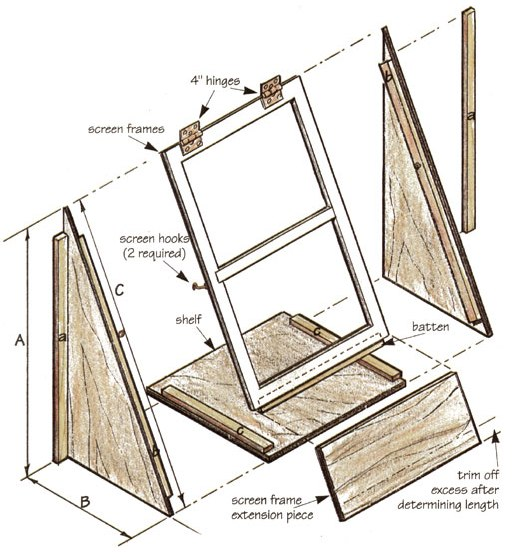

Mother's Woodshop
1-4x8 sheet of 3/4" plywood
1" x 2" x 25' fir stock
2-4" hinges
1lb 6D galvanized nails or screws
1 small tube of caulking
1 small tube of waterproof
carpenter's glue
2 pints primer/sealer
2 pints paint
2 screen hooks
3' x 5' sheet of 5ml plastic film
My wife, Vivian, has been using the sill of a south-facing window in the kitchen to start seeds and for her small herb garden. She remarked one morning over coffee that she wished she had a little more window space to grow a few more things. Well, she must have caught my brain in "receive" mode because I started thinking of ways that we might be able to gain more shelf space without it turning into an expensive and time-consuming project (like each weekend project that takes me a month to do). So here is what we came up with and built in a weekend. .. really!
- Will Shelton
Our window is the standard wood double-hung variety. Take the wood-framed screen off the window and attach a sheet of five-ml clear plastic film over the screen on the outside. I use thin strips of wood and staples. If you have storm windows, you can probably use them instead of covering the screen. If you have modern aluminum screens, you may be able to substitute the screen fabric with the plastic film using the splines to hold the film in place. Or make a simple frame using 1" by 2" stock. In any event, attach the outside top of the screen frame to the window frame using hinges. (I used 4" hinges from my storage box of salvaged stuff too valuable to throw away.) Prop the screen open at about 35 degrees.
Next, cut a piece of 3/4" plywood as wide as the window opening and 2 1/2' deep. This will be the shelf for all the "new" plants to sit on. Tack this temporarily in position on the sill allowing 2"-3" or so to stick out of the window.
All the dimensions will naturally be related to your particular window, and slight modification of this plan will be necessary for your individual application.
You will need to extend the bottom of the screen frame so it can reach the end of the shelf unless you make the frame from scratch. To do this, cut a piece of 3/4" plywood as wide as the screen frame and 10" deep. This should give you a little extra wood that you can trim to fit later. Attach the extension to the bottom of the screen frame with a simple board and batten joint. Cut the batten so it is 1 3/4" shorter than the width of the screen. Use the 1" by 2" stock. Center and attach the batten on the inside of the screen frame. Lower the screen frame until it touches the shelf. Trim off any of the extension that protrudes too far below the shelf.
With the screen in the lowered position, determine the dimensions (A), (B), and (C). Using these dimensions, cut two triangular pieces out of the 3/4" plywood.
Three cleats per side will need to be cut from the 1" by 2" stock. Cleat (a) attaches the triangular pieces to the window frame. Cleat (b) attaches to the triangular pieces and serves as a rest for the screen. Cleat (c) serves as a strong attachment point for the shelf and the triangular pieces. Otherwise, you would have to nail or screw into the endgrain of the plywood, and plywood is particularly unhappy with that kind of joint, i.e., "Look Vivian, the shelf just fell."
Two standard screen hooks will need to be attached on the screen frame and their corresponding eyes attached to the screen rest cleats (b). The hooks are used to keep the screen shut, and they also allow you to open the screen if it gets too hot in there.
With all pieces cut, everything now needs to be disassembled, primed, and painted. You'll need a sealing primer, and you'll need to pay particular attention to be sure the edges of the plywood are well sealed. With all the wood properly protected, permanently assemble the parts in their proper locations. Caulk all seams. I much prefer using screws for their greater holding ability and ease of disassembly; however, galvanized nails could be used throughout.
Vivian is so tickled with the new mini-greenhouse that she wants me to build a larger version for another window. What have I gotten myself into this time?
|
 ILLUSTRATION: WILL STENTON |
|
|